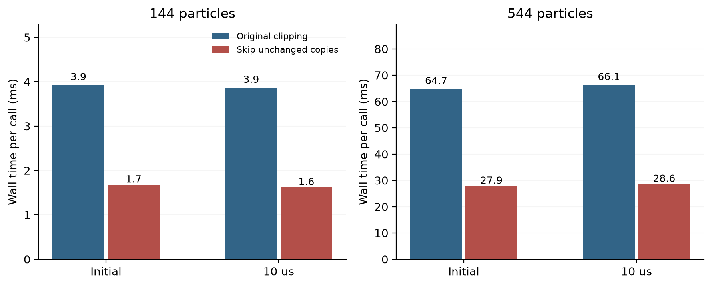

不改变计算出的膜，
先减少重复复制。
此前探针发现几何构造开销较高。本轮测试一个隔离候选：裁剪面没有改变单元时，保留已有顶点，省去整份多边形的重复分配和复制。
01 · 改了哪一步？
每个粒子的控制单元由许多裁剪面逐次切出。已有程序对每个面都会建立一份新多边形，即使所有顶点都在保留侧。本候选先用原来相同的浮点判断逐个检查顶点：全部保留时不复制；真正发生切割时，仍调用原来的裁剪函数。
粒子顺序、裁剪顺序、交点运算与几何容差保持一致。没有截断邻居，也没有加入半径近似、形状校正力或新物理参数。它是已有平面相交筛选思想的工程应用，不能作为新的薄膜物理创新。
02 · 实测裁剪成本

| 状态 | 未改变的裁剪 | 原裁剪／毫秒 | 候选／毫秒 | 裁剪加速比 |
|---|---|---|---|---|
| 144粒子 / 初始 | 66.7% | 3.92 | 1.68 | 2.34× |
| 144粒子 / 10微秒 | 66.7% | 3.86 | 1.62 | 2.38× |
| 544粒子 / 初始 | 71.1% | 64.68 | 27.86 | 2.32× |
| 544粒子 / 10微秒 | 71.1% | 66.13 | 28.56 | 2.32× |
544粒子时，约71%的裁剪未改变当前多边形。原裁剪约65–66毫秒，候选约28–29毫秒；独立测得的完整原始几何构造约71–75毫秒，分区校验约2毫秒。重复复制是一个值得处理的实际成本。
03 · 快一点以后，答案有没有变？
先运行候选版本的弯曲膜、初始准备、机械观察器和几何转移测试，实际结果为14、4、6、14项通过，零失败，共38项。随后四个冻结状态的原生探针也通过：能量导入误差、梯度／Hessian相关汇总量、AD节点数、Newton与CG迭代数、力阈值比例及机械终点等全部非计时标量与原始探针完全相同。
轨迹已完成，原定全部文件逐字节门槛未通过：匹配10/11文件。独立检查发现summary.json只有wall_s运行耗时字段不同，其余物理量和全部轨迹文件相同；这是事后诊断，不将原门槛改判。候选原生耗时254.9秒。
对照覆盖初始状态、实际保存状态、面几何、每步历史、力学和区域功、初始准备及最终摘要，不仅比较一张图或平均膜厚。参照读取已经冻结的原始文件，没有重算。候选计时与历史计时处于不同运行时段，不能据此宣称完整轨迹加速倍数。
04 · 保留停止记录
首次执行脚本把弯曲膜与观察器两组测试的预期数量写反，导致虽然所有二进制测试零失败，脚本仍按保护条件跳过后续计算。按原测试名称和日志核实后修复，复用原有测试执行与二进制哈希，另建继续协议；原停止状态没有覆盖。这是测试清单错误，不是物理测试失败。另一个计划遗漏是要求包含运行耗时的summary.json也逐字节一致；实际只有该计时字段不同，原定门槛仍记为未通过，没有重跑或放宽物理验收。
事前清单的文件数也在执行前由9更正为实际11份，全部纳入对照，没有排除任何输出。
05 · 对C1主线意味着什么？
候选仍是独立实验可执行程序，默认求解器和冻结参照二进制保持原样。这次提供了减少几何成本、且在所测状态和轨迹上保持答案一致的证据；它能支持后续加密计算，但不会自动解决离散误差。原定11份全部字节相同的工程门槛仍未通过；全部物理输出相同属于明确剔除wall_s后的事后字段检查，两类证据分开保留。
下一步将把主要精力放回实际空间敏感性的来源，结合完整刚度与运动诊断判断是否需要改变离散方法。只有候选的适用范围和退化输入覆盖充分，才考虑正式采用；不会为了提速放宽科学验收门槛。